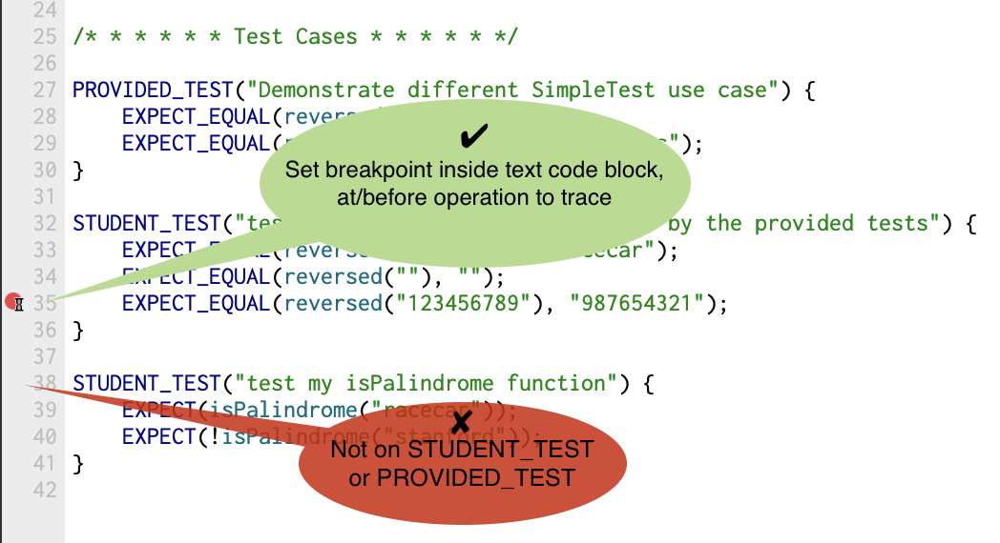

Why testing?
Anybody that writes code for some purpose (whether as a researcher, a software engineer, or in any other profession) will get to the point where others are relying on their code. Bugs in software can be dangerous or even deadly. Additionally, users do not enjoy using software that is buggy and crashes, and fixing bugs once the software is in production is very costly. Most importantly, good engineers take pride in building things that work well and are robust.
The key to writing working software is developing good tests. In this course we follow an approach called test-driven development. As you write code, you will also write companion tests. These tests are used to verify that the code you just finished writing works as intended.
This strategy is sometimes called "test-as-you-go." You work in small steps, being sure to test thoroughly, and only move on after you having confirmed the correctness and fixed all issues. The beauty of this approach is that each step is relatively straightforward and easy to debug. Imagine the opposite approach: you write hundreds of lines of code, the code does not work, and now you need to figure out which one of those hundreds of lines of code isn't working as expected! That is the sort of frustration that we want to help you all avoid as you continue to develop your skills as programmers.
SimpleTest
For CS106B, we provide a unit-test framework called SimpleTest that you will use to test your code. SimpleTest provides a simple, clean approach to writing and running test cases.
Here is an example of how you might see the SimpleTest framework used in the starter code of an assignment.
// reversed(str) returns copy of str with characters in reverse order.
string reversed(string s) {
string result;
for (int i = s.length() - 1; i >= 0; i--) {
result += s[i];
}
return result;
}
/* * * * * * Test Cases * * * * * */
PROVIDED_TEST("Demonstrate different SimpleTest use cases") {
EXPECT_EQUAL(reversed("but"), "tub");
EXPECT_EQUAL(reversed("stanford"), "drofnats");
}
When we provide tests for you in the starter code, each test case is wrapped in the special macro PROVIDED_TEST. The string argument in parentheses describes the purpose of the test, and the code block that follows (enclosed in curly braces) defines the actual test behavior.
When you add your own test cases, you will wrap your test code blocks in the STUDENT_TEST macro instead. The STUDENT_TEST functionality and structure are exactly the same as PROVIDED_TEST; it simply distinguishes the tests you've written yourself from those we provide for the benefit of your grader. You will see many examples of this in the following sections.
EXPECT_EQUAL
The test macro EXPECT_EQUAL(your_result, expected_result) tests whether your result matches the expected. A typical use for EXPECT_EQUAL compares a value produced by your code (e.g. the return value from a call to one of your functions) to the expected result and confirms they are equal. As an example, consider the first test case from the code above:
EXPECT_EQUAL(reversed("but"), "tub");
This test case compares the result of the call reversed("but") to the expected answer "tub". If the two are indeed equal, the test will be reported as Correct. If they do not match, the test is reported as a failure.
See below the added STUDENT_TEST code block with three tests of your own. These test cases use EXPECT_EQUAL to try out further scenarios not covered by the provided tests.
/* * * * * * Test Cases * * * * * */
PROVIDED_TEST("Demonstrate different SimpleTest use cases") {
EXPECT_EQUAL(reversed("but"), "tub");
EXPECT_EQUAL(reversed("stanford"), "drofnats");
}
STUDENT_TEST("my added cases not covered by the provided tests") {
EXPECT_EQUAL(reversed("racecar"), "racecar");
EXPECT_EQUAL(reversed(""), "");
EXPECT_EQUAL(reversed("123456789"), "987654321");
}
Important note: You should never modify the provided tests —these are the same tests that will be used for grading, so it is not in your best interest to modify them. When adding tests, put them in a new
STUDENT_TESTblock of your own.
EXPECT
The EXPECT(expression) test case confirms the truth of a single expression. If the expression evaluates to true, the test is reported as Correct. If false, it reports a test failure. For example, if you added the isPalindrome function to the above program, you could add a test case that uses EXPECT to confirm the correct result from isPalidrome, as shown below.
// reversed(str) returns copy of str with characters in reverse order.
string reversed(string s) {
string result;
for (int i = s.length() - 1; i >= 0; i--) {
result += s[i];
}
return result;
}
bool isPalindrome(string s) {
return s == reversed(s);
}
/* * * * * * Test Cases * * * * * */
PROVIDED_TEST("Demonstrate different SimpleTest use case") {
EXPECT_EQUAL(reversed("but"), "tub");
EXPECT_EQUAL(reversed("stanford"), "drofnats");
}
STUDENT_TEST("test additional cases not covered by the provided tests") {
EXPECT_EQUAL(reversed("racecar"), "racecar");
EXPECT_EQUAL(reversed(""), "");
EXPECT_EQUAL(reversed("123456789"), "987654321");
}
STUDENT_TEST("test my isPalindrome function") {
EXPECT(isPalindrome("racecar"));
EXPECT(!isPalindrome("stanford"));
}
When would you use EXPECT instead of EXPECT_EQUAL?
EXPECT_EQUAL is appropriate when you have a result that can be compared for equality to an expected result (e.g. two numbers, two strings, two Vectors, etc.). For most situations, confirming that your code "got the right answer" is exactly what you need. On the other hand, EXPECT allows you to express a wider variety of conditions beyond simple equality. For example, you could confirm the truth of a complex set of conditions by using a compound expression such as EXPECT(x > y && y != z || y == 0);
EXPECT_ERROR
The EXPECT_ERROR(expression) test macro is used to verify that evaluating the given expression raises an error (i.e. calls the error() function). If an error is raised, the test is reported as Correct. If not, the test is reported as a failure. As an example, EXPECT_ERROR(stringToInteger("cow")); would confirm that an error is raised when trying to convert the non-numeric string to a number value. EXPECT_ERROR is used in the specific situation of confirming expected handling of errors within your code.
EXPECT_NO_ERROR
The EXPECT_NO_ERROR(expression) is the opposite of the above. If the expression successfully runs to completion without raising an error, then the test is reported as Correct. The test is reported as a failure if the error() function is called. EXPECT_NO_ERROR is used in situations where you want to confirm that functions run to completion on correct input.
Debugging a failing test
Your goal when testing your code should be to get all of your tests to pass. However, if you get a failed test result, don't look at this as sad times; this test result is news you can use. The failing test case indicates an operation that behaved unexpectedly. This means you know where to focus your attention.
Dig into that test case under the debugger to analyze how it has gone astray. Set a breakpoint inside the text code block, and choose to stop at the line that is at or before the failing EXPECT/EXPECT_EQUAL statement.

Now run the tests using the debugger. When the program stops at the breakpoint, single-step through the code while watching the variables pane to observe how the state of your program changes, using a technique just like you did in the [debugging tutorial][debugger_tutorial] in Assignment 0.
After you understand the failure and apply a fix, run that test again. When you see the test pass, you can celebrate having squashed that bug!
Debugging your test cases
Your test cases are implemented as code, which means that they, too, can have bugs of their own. Having a bug in your test case can truly be a maddening experience! A test case that produces a false negative can lead you to investigate a non-existent defect and a false positive lulls you into overlooking a lurking one. You attribute the erroneous test result to the code being tested, yet the real issue is within the test case itself. Unlike hackneyed sitcom plots, hilarity does not ensue from this misunderstanding.
For example, suppose you have written a function that returns the square of a number. You write some tests for it:
int square(int n) {
return n * n;
}
STUDENT_TEST("confirm my square function works correctly for 5, 10, and 15") {
EXPECT_EQUAL(square(5), 25);
EXPECT_EQUAL(square(10), 100);
EXPECT_EQUAL(square(15), 275); // this test case is BUGGY!
}
The first two tests pass but the third will fail. The square of 15 is actually 225, not 275. The problem isn't with the square() function, but with the buggy test case that produces a false negative. Every programmer can relate to a time when a buggy test case reported an erroneous failure that led to wild goose chase to find a non-existent flaw in code that was correct all along, argh!
There can also be tests that produce a false positive, i.e. report that code is Correct when it has a defect. This could be due to a buggy test case that compares to the wrong expected value, such as shown above. Another source of false positives is when your test cases are not sufficiently robust or comprehensive to surface the problem. If square() returned the wrong value only for negative inputs and your test cases only tested positive inputs, you would receive all Correct results and no mention of the lurking defect. Or perhaps you took a shortcut and wrote your test cases to only confirm that square() returned a non-negative value (e.g. EXPECT(square(15) >= 0)) without checking the specific value. These test cases are not buggy per se, but they are not thorough enough to fully vet the code being tested.
A key takehome is that your test results are meaningful exactly and only if your test cases accurate and robust. Put extra care into verifying each test case is properly constructed and produces accurate results. Ensure your suite of test cases cover a comprehensive range of scenarios, including unusual inputs and edge conditions. Now when your program earns its clean sweep of Correct results, you can celebrate that success with confidence!
Test-driven development
We highly recommend employing test-driven development when working on your assignments. To do so, follow these steps:
- identify a small, concrete task (bug to fix, feature to add, desired change in behavior)
- construct tests for the desired outcome, add them to the file in which you're currently working, and verify the current code fails these tests
- implement the changes in your code to complete the task
- re-run your newly added tests and verify they now succeed
- test the rest of the system (by running all tests) to verify you didn't inadvertently break something else
This process allows you to change only a small amount of code at once and validate your results with carefully constructed tests before and after. It keeps your development moving forward while ensuring you have a functional program at each step!
Test cases and grading
The SimpleTest framework will be supplied with each assignment, and there will be some initial test cases provided in the starter project, but you will also be expected to add your own tests.
You will submit your tests along with the code, and the grader's review will consider the quality of your tests. We will also provide comments on your tests to help you improve your testing approach. Please incorporate our feedback into future assignments; it will improve your grade and, more importantly, your effectiveness as a programmer. We guarantee future employers will appreciate your ability to write good tests and well-tested code!
Here are some things we look for in good tests.
-
Are the tests comprehensive? Is all the functionality tested?
-
Where possible, are the tests self-contained and independent?
-
Did you anticipate potential problems, tricky cases, and boundary conditions?
-
Did you develop the tests in a good order? Did you test basic functionality before more advanced functionality? Did you take small, carefully chosen steps?
Common questions
Should each EXPECT/EXPECT_EQUAL be in a STUDENT_TEST code block of its own or can I list several within one code block?
For tests that are closely related, it may be convenient to group them together in the same code block under one test name. The tests will operate as one combined group and show up in the report as one aggregate success (if all pass) or one failure (if at least one fails).
However, there are advantages to separating each individual test case into its own code block. You will be able to choose a clear, specific name for this block. The separation isolates each test so you can easily identify exactly which cases are passing and which are failing. For example, if you have,
STUDENT_TEST("Many tests together") {
EXPECT(... Test A ...)
EXPECT(... Test B ...)
EXPECT(... Test C ...)
}
then if Test B fails, Test C will never run and you won't be able to see the output – you won't know if Test C passed or failed. On the other hand, if you structure your tests like this
STUDENT_TEST("Test A") {
EXPECT(... Test A ...)
}
STUDENT_TEST("Test B") {
EXPECT(... Test B ...)
}
STUDENT_TEST("Test C") {
EXPECT(... Test C ...)
}
then all the tests will run individually, and even if Test B fails, you will still get independent information about Tests A and C. Having this sort of isolated behavior might make debugging any problems you encounter a little bit easier!
When an assignment requirement says to "add 2 tests," do we count each STUDENT_TEST or each EXPECT_EQUAL?
Each use of EXPECT/EXPECT_EQUAL is counted as one test case. Read the answer to the previous question for some things to consider when deciding whether to group multiple test cases under a single STUDENT_TEST group or keep separated.
The font/sizes/colors in the Simple Test result window are not pleasing to me. Can I customize the display?
Yes! Look in the Qt project browser under Other files->testing for a file named styles.css. This file is the CSS stylesheet for the Simple Test window. Edit this file to change the display styles. Each project has its own copy of the stylesheet. Copy the edited stylesheet from this project into a new project to carry those customizations forward.